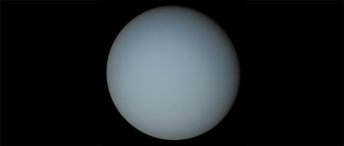
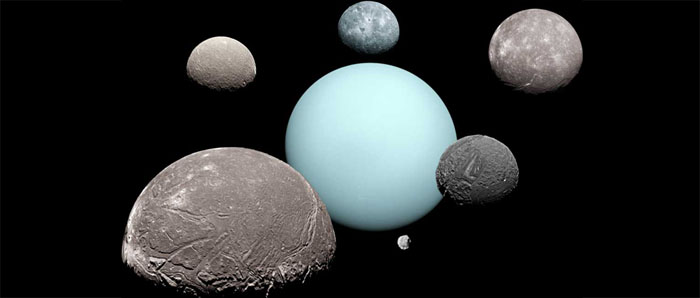

Uranus
Uranus est la septième planète du système solaire. Elle gravite autour du Soleil à une distance comprise entre 2 735 000 000 km à l'aphélie et 3 004 000 000 km au périhélie. Elle boucle son orbite en 84 ans. C'est une géante gazeuse au diamètre de 51 800 km qui effectue un tour complet sur elle-même en 17,24 h.
Elle se distingue de toutes les autres planètes par sa forte inclinaison. Elle est couchée sur son orbite, son pôle Sud face au Soleil. Cette orientation pourrait résulter d'une collision avec un corps de la taille d'une planète survenue dans son jeune âge. Uranus est entourée au niveau de l'équateur de neuf anneaux elliptiques, de couleur sombre, sans doute parce que les particules qui les composent sont formées ou recouvertes d'une matière riche en carbone.
Uranus possède un noyau rocheux entouré d'une atmosphère épaisse et dense, dans laquelle des nuages de cristaux de glace, de méthane et d'ammoniac sont en suspension. Les nuages de méthane prédominent dans la couche supérieure de cette atmosphère, conférant à Uranus une couleur verdâtre. Observée de l'espace ou de la Terre, elle a l'aspect d'un petit disque verdâtre se déplaçant lentement.

Source : Wikipédia
Satellites d'Uranus

Source : Lien
Uranus possède au moins 27 satellites naturels. Les deux premiers furent découverts par William Herschel le 13 mars 1787 et nommés Titania et Obéron par son fils, d’après des personnages du « Songe d’une nuit d’été » de William Shakespeare. La plupart des autres satellites naturels connus d'Uranus, découverts par la suite, prirent également le nom de personnages créés par le dramaturge. Deux autres lunes, Ariel et Umbriel, furent découvertes par William Lassell en 1851. Gerard Kuiper découvrit Miranda en 1948. Dix autres lunes furent découvertes lors du passage de Voyager 2 en 1986 et une autre, Perdita, fut découverte treize ans plus tard parmi les photographies reçues. Onze autres lunes ont été identifiées depuis, en utilisant des télescopes terrestres.
Sources : Étoiles et planètes, Gründ, 1988 | Wikipédia
Plan du site | Contact | Site réalisé par Mathieu Morainville.